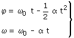
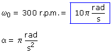
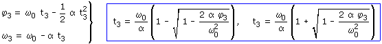
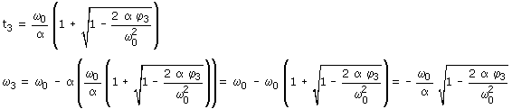
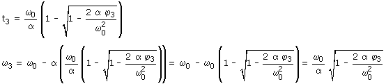
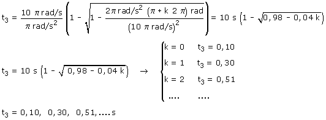
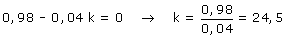
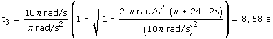

c)
Ecuaciones del movimiento
 |
 |
Parámetros:  |
Aplicación:
Datos: φ3 = (π + k·2π) rad, Incógnitas: t3, ω3
 |
 |
Para interpretar los tiempos calculamos la correspondiente velocidad del móvil

No puede ser que, un cuerpo que gira en sentido contrario al de las agujas del reloj frenando, gire en el sentido de las agujas del reloj. Un móvil frenado disminuye su velocidad hasta quedar parado pero no invierte el sentido de su movimiento

Esta solución es correcta: el móvil gira en el mismo sentido que al empezar a frenar

Observa, que conforme aumenta k, el radicando (Contenido
de la raíz) va disminuyendo y llegará un momento en que
será negativo y la raíz será imaginaria.
¿Qué significa esto? Pues que el móvil no pasa más
veces por esta posición girando en el sentido en que lo hacía
inicialmente
Vamos a ver cuando pasa esto:

En la vuelta k = 24 se produce el último paso por la posición indicada, en el instante:
